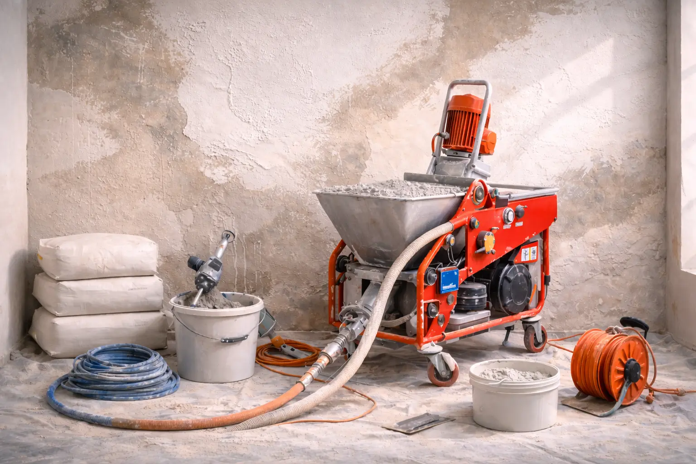

Как правильно штукатурить стены: пошаговое руководство
Пошаговое руководство по штукатурке стен в квартире. Как выбрать смесь, подготовить поверхность и избежать типичных ошибок.
Пошаговое руководство по штукатурке стен в квартире. Как выбрать смесь, подготовить поверхность и избежать типичных ошибок.

Ровные стены — основа качественного ремонта. От них зависит, как ляжет краска, обои или плитка. Кривые поверхности превращают отделку в мучения: обои отходят волнами, краска ложится пятнами, плитка со временем трескается.
Штукатурка решает эту проблему раз и навсегда. Она выравнивает стены, создает прочную основу и защищает от влаги. Неправильный подход оборачивается переделкой через год. Правильный — ровными стенами на 15+ лет.
В новостройках стены часто отклоняются от вертикали на 3-5 см по всей высоте. Это норма, но отделать такую поверхность невозможно. Штукатурка убирает неровности и выполняет несколько задач сразу.
Она закрывает поры кирпича и бетона, не давая влаге разрушать стену изнутри. Создает барьер от перепадов температур. Снижает шум от соседей. И главное — делает поверхность идеально ровной под любой финиш.
Главное различие — материал в основе смеси. От него зависят свойства, скорость высыхания и область применения.
Гипсовые смеси хороши для сухих помещений — гостиных, спален, коридоров. Они пластичные, легко наносятся, быстро сохнут примерно за неделю. Стены после такой штукатурки хорошо дышат, в помещении комфортный микроклимат. Еще один плюс — высокая белизна, меньше придется шпаклевать перед покраской.
Цементные составы берут туда, где есть влага — кухни, ванные комнаты, балконы. Они прочные и водостойкие. Минус — сохнут долго, около месяца. Зато выдерживают толстые слои и не разрушаются от пара или брызг воды.
Для коридоров и помещений с переменной влажностью подойдет цементно-известковая смесь — компромисс между прочностью и удобством работы.
Сначала смотрят на стены вашей квартиры. Кирпич и бетон принимают любую штукатурку, главное — хорошо прогрунтовать. Гипсокартон работает только с легкими гипсовыми смесями. Газобетон требует цементных составов с армированием.
Толщина слоя влияет на расход. Если неровности небольшие, хватит 5-10 мм. Для серьезного выравнивания нужно 20-30 мм. Сильно кривые стены в новостройке закрывают слоем до 50 мм, но с армирующей сеткой.
Еще важна подвижность раствора. Слишком жидкий не будет держаться на стене, слишком густой трудно распределять. Идеальная консистенция — как плотная сметана. Также учитывайте время работы с раствором — у гипсовых смесей 45-90 минут, у цементных до 4 часов.
Производители улучшают составы. Цементные стали легче наноситься благодаря пластификаторам. Гипсовые теперь делают влагостойкими специальными добавками — подходят даже для небольших кухонь. Интересный вариант — смеси с перлитом. Это вулканическая пемза вместо песка, она делает штукатурку легче и теплее.
Появились составы с микроволокнами — они не дают поверхности трескаться при усадке дома. Есть смеси специально под машинное нанесение, но ими удобно работать и вручную.
От качества подготовки зависит все. Плохие стены — отслоение штукатурки через пару месяцев.
Сначала убирают старое покрытие. Простукивают поверхность — где глухой звук, сбивают. Обои и краску снимают скребком, жир смывают специальным средством. Грибок обрабатывают фунгицидом.
Трещины шире 2 мм заделывают армирующей лентой и шпаклевкой. Грунтуют дважды: сначала состав глубокого проникновения, через 4-6 часов — бетоноконтакт для гладких поверхностей. На монолитных стенах делают засечки через каждые 20 см.
Маяки устанавливают через 1,2-1,5 метра. Фиксируют гипсовым клеем, проверяют уровнем. От углов отступают на 10-15 см.
Цементную смесь наносят в три этапа. Первый — обрызг 3-5 мм. Раствор делают жидким и просто бросают на стену мастерком. Он заполняет поры и создает шероховатость для следующего слоя.
Через 4-6 часов наносят основной слой 15-25 мм. Раствор набирают ковшом, бросают снизу вверх и выравнивают правилом. Двигаются зигзагами под небольшим углом. Излишки собирают с пола и возвращают на стену.
Финальный слой 3-7 мм делают через сутки. Он придает гладкость. Сначала проходят трапециевидным правилом, потом затирают губкой.
Гипсовую штукатурку наносят одним слоем 20-50 мм. Она ложится легче, выравнивается проще.
Главное — правильный инструмент. Ковшовый шпатель удобен для забора раствора, мастерок — для нанесения. Длинное алюминиевое правило выравнивает большие участки. Трапециевидное правило срезает бугры. Мощная дрель с миксером замешивает раствор без комков.
Раствор готовят строго по инструкции. Воды нельзя ни добавлять, ни убавлять. Правило при выравнивании держат под углом 5-7 градусов. Подрезку делают через 30-120 минут после нанесения — когда штукатурка схватится, но еще не затвердела.
Маяки снимают через 1-2 дня, швы заделывают. Заглаживание делают опционально — финишную гладкость даст шпаклевка.
Большинство трещин появляются из-за спешки с сушкой. Гипс сохнет неделю на каждый сантиметр толщины. Цемент — месяц плюс день на сантиметр. Тепловые пушки и сквозняки запрещены.
Оптимальные условия: влажность 45-65%, температура 15-25°C. Проветривают дважды в день по полчаса. Влажные помещения держат на микроклимате 55-60%.
Гипсовую штукатурку часто пытаются использовать в ванной — она осыпается от пара через полгода. На гладкий бетон без грунтовки бетоноконтакт ничего не держится. Маяки на алебастре проседают, тянут за собой всю поверхность.
Толстый слой без армирования трескается при усадке. Перебор воды в растворе снижает прочность вдвое. Ручное размешивание оставляет комки. Без обрызга цементная штукатурка отслаивается.
Решение простое: грунтовка в два слоя, армирование толстых участков, точный замес миксером, терпение при сушке.
Через неделю после гипса грунтуют поверхность под покраску. Наносят стартовую шпаклевку, шлифуют, потом финишную. Цемент перед отделкой просушивают 28 суток.
Штукатурка стен — основа долговечного ремонта. Качественная подготовка, правильная технология нанесения и терпеливая сушка дают идеально ровные поверхности без дефектов.
Нужна помощь с выравниванием? Специалисты ROSA бесплатно приедут на замер, осмотрят стены и посчитают стоимость под ключ. +7 (985) 135-49-91 или Telegram @MSKROSA. Звоните — подскажем оптимальный вариант для вашей квартиры!

Сравнение механизированного и ручного оштукатуривания стен. Когда выбрать станцию для скорости, а когда шпатель для точности.

Гипсовая, цементная или полимерная штукатурка — какую выбрать для стен в квартире. Сравнение свойств, плюсов и минусов для сухих и влажных помещений.